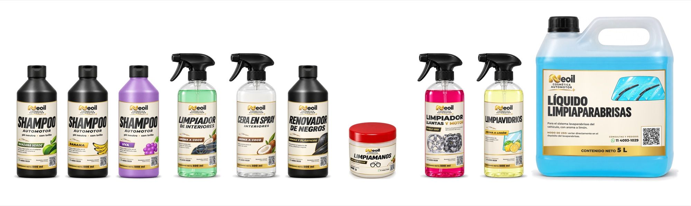
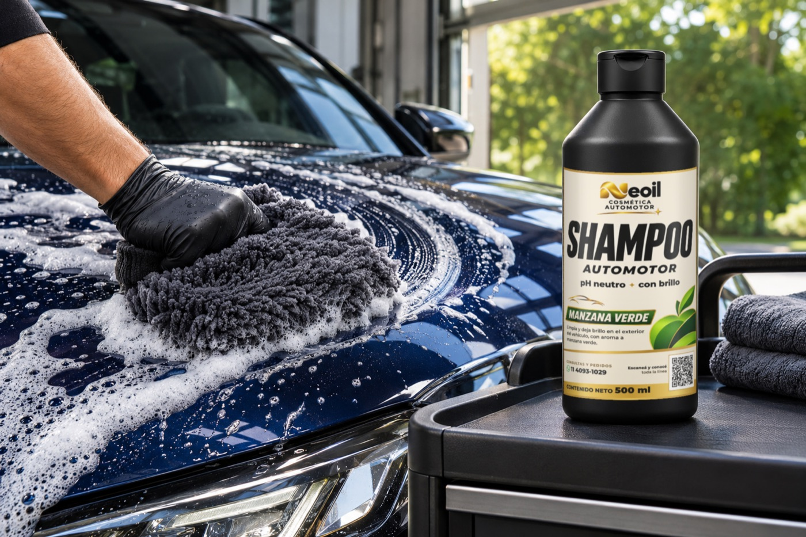
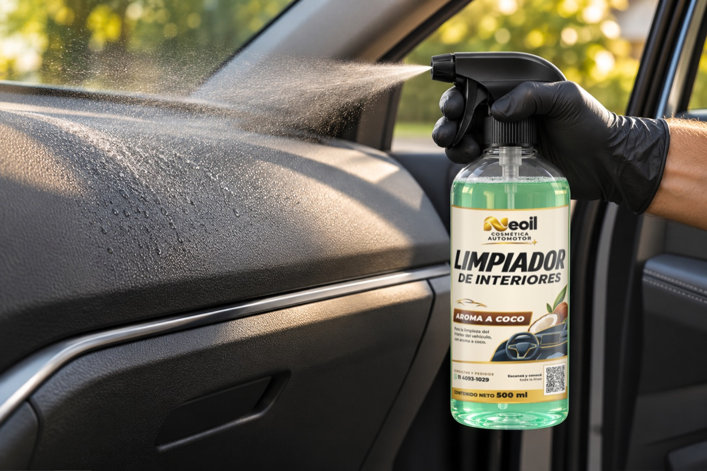
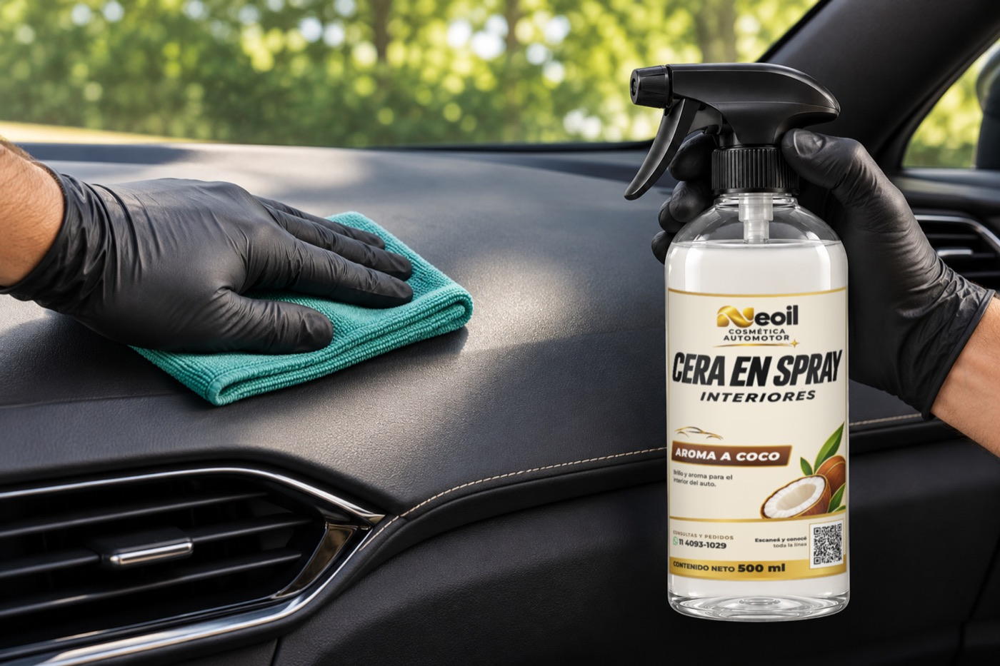
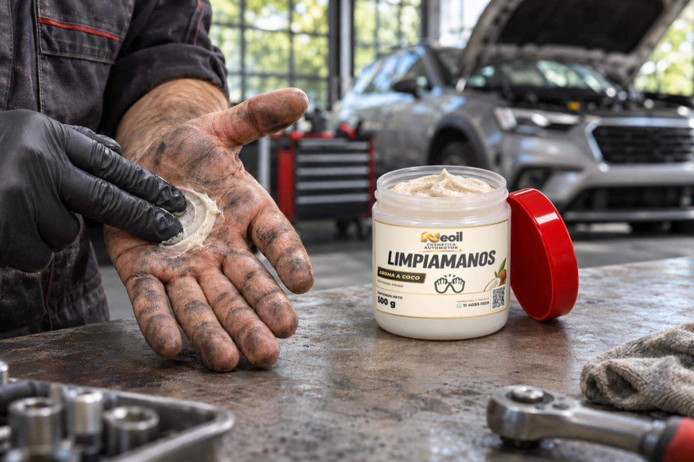
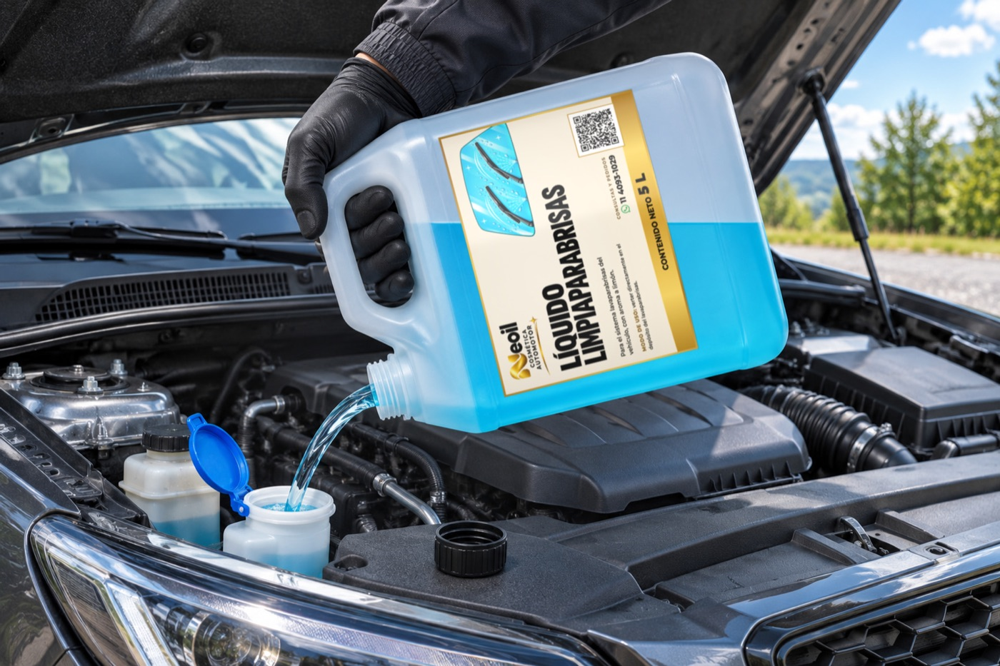

Cuidado
del auto.
Productos para el lavado y el cuidado interior y exterior del vehículo. Elegí uno para ver para qué sirve y cómo se usa.
Ver los productos
Nuestros productos.

Lavado exterior
Shampoo neutro
pH neutro, con brillo. Tres aromas.
Ver producto→
Habitáculo
Limpiador de interiores
Para el interior del vehículo, con aroma a coco.
Ver producto→
Habitáculo
Cera en spray interiores
Brillo y aroma a coco para el interior.
Ver producto→
Terminación exterior
Renovador de negros
Para gomas y plásticos negros.
Ver producto→
Taller
Limpiamanos
Crema con piedra pómez, aroma a coco.
Ver producto→
Ruedas y motor
Limpiador de llantas y motor
Doble uso: llantas y exterior del motor.
Ver producto→
Cristales
Limpiavidrios
Para vidrios y espejos, con aroma a limón.
Ver producto→
Sistema lavaparabrisas
Líquido limpiaparabrisas
Bidón de 5 L, con aroma a limón.
Ver producto→